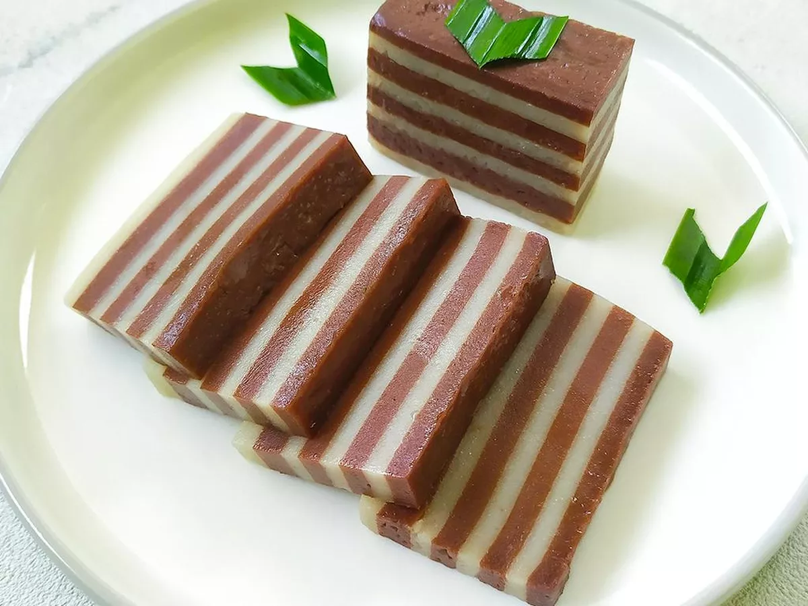

| Kue lapis adalah makanan khas Majalengka. kue ini biasanya terdiri dari dua warna yang berlapis lapis, ini yang memberi nama kue ini. Kue ini terbuat dari tepung beras, Tepung kanji, Santan, Gula pasir, Garam dan Pewarna. Kue ini di kukus setiap lapisannya sebelum kemudian lapisan di atasnya di tambahkan |  |